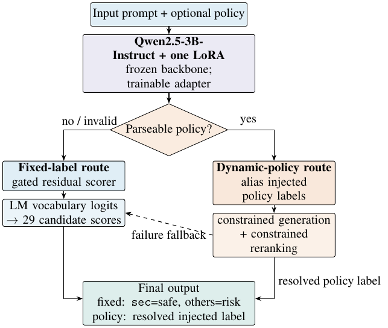

攻击者不需要破解模型，改几个字就能绕过关键词过滤。R1-DualSup 是给大模型用的一道前置闸门：在改写、换语种、加变体的提示上仍然拦得住，而落地产物只有一个 38.3M 参数的适配器。 An attacker does not need to break a model — rewording is enough to slip past keyword filters. R1-DualSup is a front gate for large models: it still holds on rewritten, cross-lingual and variant-augmented prompts, and the shipped artifact is a 38.3M-parameter adapter.
拦得狠，正常提问被误杀；放得松，攻击者改几个字就过去了。业界常见做法是给分类头配一个固定阈值一刀切——召回和误杀被焊死在一起，运营方没有调的空间。 Block aggressively and ordinary requests get killed; block loosely and a reworded attack walks through. The usual answer is a classifier head with one fixed threshold, which welds recall and false-block together and leaves the operator nothing to tune.
更麻烦的是评测。只测原始提示会高估护栏——真实攻击是改写过的、跨语种的、带变体的。 Evaluation makes it worse: testing only original prompts overstates a guardrail, because real attacks arrive rewritten, cross-lingual and augmented.

下面是公开响应安全测试集 BeaverTails 的 3,021 行，同一口径、同一批数据。两个大模型参考线按各自官方接口适配了提示与解析器。 The 3,021 rows below come from the public BeaverTails response-safety set, same protocol, same data. The two large-model reference lines were adapted to their own official interfaces for prompts and parsing.
不安全召回 / 安全特异度（%）Unsafe recall / safe specificity (%)
| 方案Approach | 不安全召回Unsafe recall | 安全特异度Safe specificity |
|---|---|---|
| R1-DualSup 3B | 94.1 | 44.6 |
| R1-Router v3 3B | 95.3 | 42.5 |
| Linear-V3 TF-IDF | 78.6 | 60.3 |
| Llama Guard 4 12B | 55.6 | 96.2 |
| GPT-OSS Safeguard 20B | 72.2 | 90.5 |
另外两个必须说清的取舍：R1-Router v3 的三项拦截率都比 DualSup 高（98.5 / 98.4 / 94.7 对 97.9 / 98.0 / 93.8），但它是双适配器，产物 76.6M 参数 / 292.5 MiB，是 DualSup 的两倍，部署更重，所以没采用。策略迁移上也一样：40 条迁移样本（含 20 个未出现在策略训练目标中的 ID）上 DualSup 是 77.5% 有效性、50.0% 精确匹配，Router v3 是 100%/100%——换来的是体积翻倍。这些是取舍，不是缺陷隐瞒。 Two trade-offs are worth stating plainly. R1-Router v3 scores higher on all three block rates (98.5 / 98.4 / 94.7 versus 97.9 / 98.0 / 93.8), but it is a two-adapter variant at 76.6M parameters and 292.5 MiB — twice the artifact, heavier to serve — so it was not adopted. Policy transfer is the same story: on 40 transfer records, 20 of whose target IDs never appeared in policy training, DualSup reaches 77.5% validity and 50.0% exact match while Router v3 reaches 100%/100%, at twice the size. These are trade-offs, stated rather than hidden.
表中拦截率（97.9 / 98.0 / 93.8）是固定风险子集上的 block rate，不是 S-Eval 官方榜分数。 The block rates above (97.9 / 98.0 / 93.8) are measured on fixed risk-only subsets and are not official S-Eval leaderboard scores.
一层统一拦截，把风险判断和业务模型解耦，换模型不用重做安全层。One interception layer decouples risk decisions from the serving model; swapping models does not mean rebuilding safety.
3B 主干单卡可服务，适配器独立分发与替换，不必重训主干。A 3B backbone serves on one GPU; adapters ship and swap independently, with no backbone retraining.
同一批固定攻击样本，比对新旧版本的召回与误杀，看新版有没有退化。The same fixed attack set, diffing recall and false-block across versions to catch regressions.
这是一个已经实现并部署的系统，不是纸面方案：适配器 38.3M 参数 / 146.3 MiB，挂在冻结的 Qwen2.5-3B-Instruct 上（LoRA r=16, α=32）。论文已被 ICDM 2026 Teen Track 接收，出版流程已完成，待收录进 IEEE Xplore。正式收录进 IEEE Xplore 后，这里会补上 DOI 与全文链接——本页只介绍系统与结果，不提供论文正文。 This is implemented and deployed, not a proposal: a 38.3M-parameter / 146.3 MiB adapter on a frozen Qwen2.5-3B-Instruct backbone (LoRA r=16, α=32). The paper is accepted at the ICDM 2026 Teen Track and the publication process is complete; it is awaiting indexing in IEEE Xplore. Once it is indexed on IEEE Xplore, the DOI and full-text link will be added here — this page introduces the system and its results, not the paper text.